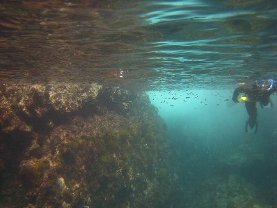

夏のシュノーケル | 2013年9月 幹事：べっしー |
|---|---|
| 夏です！海です！ヒリゾ浜です！ 今年も8月が終了し、シュノーケルシーズンがやってきました！ いや、7月か8月とかでも良いんですが、海水浴客が少なくなって海水温が暖かい9月って狙い目なんですよ。 と、言うことで今年も行ってきましたヒリゾ浜。（ヒリゾ浜の詳しいことは過去レポをご覧下さい）今回は、キッカー、シュガー、私の3名です。 例年は平日狙いなんですが、今回は都合上土曜日です。しかも三連休初日です。 清水を5時半に出発し、串木到着が8時半過ぎ。なんと駐車場は満車のため、おじさんに「帰れ」と言われてしまいました。当然諦められなく、遠くの駐車エリアに駐めて歩きましたよ。 | |
 奥の方、人混み凄いの分かります？ |  ちょい、濁り気味かな？ |
| ヒリゾ浜自体も激混みで、日除けテントを張る場所確保が大変です。張れたから良いけど。 天気も上々、人は多いけど早速海へ。台風が近づいているせいか、ちょっと砂が巻いてる感じで、透明度は最高ではありませんが、いつもより大きい魚が多いような木がします。ま、ボラですけど。 それでも、やっぱ綺麗ですよね〜。小さいカラフルな魚が一杯です。アオリイカがいつもより大きい気がします。 夏をたっぷり堪能したら、また来年〜 | |
 |  |
 |  |
| コメント＆写真 ｂｙ べっしー | |